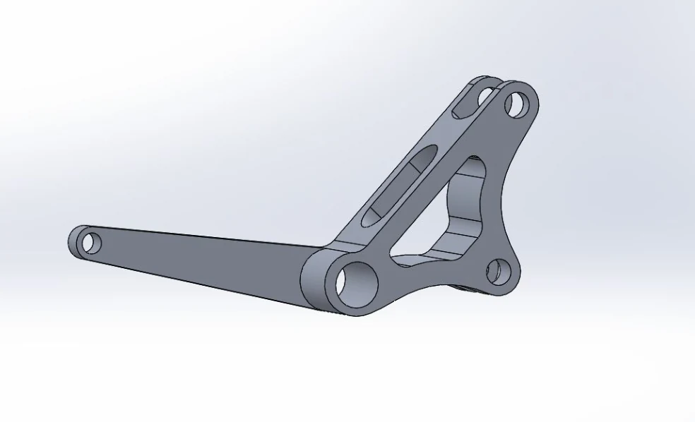
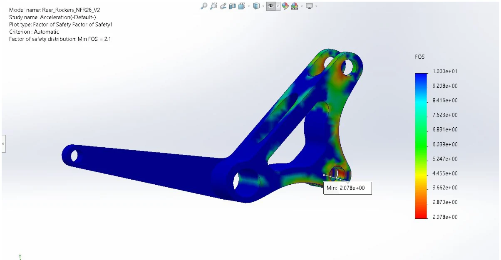
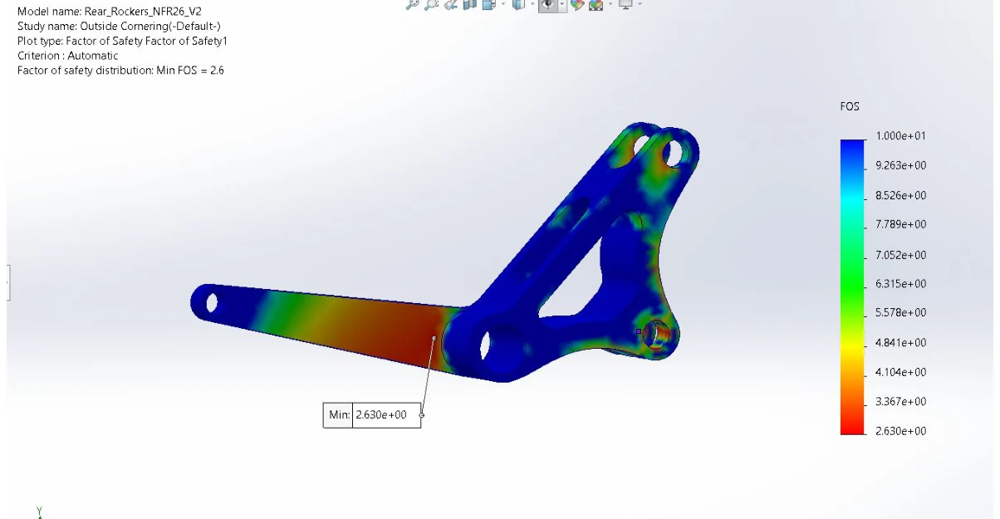
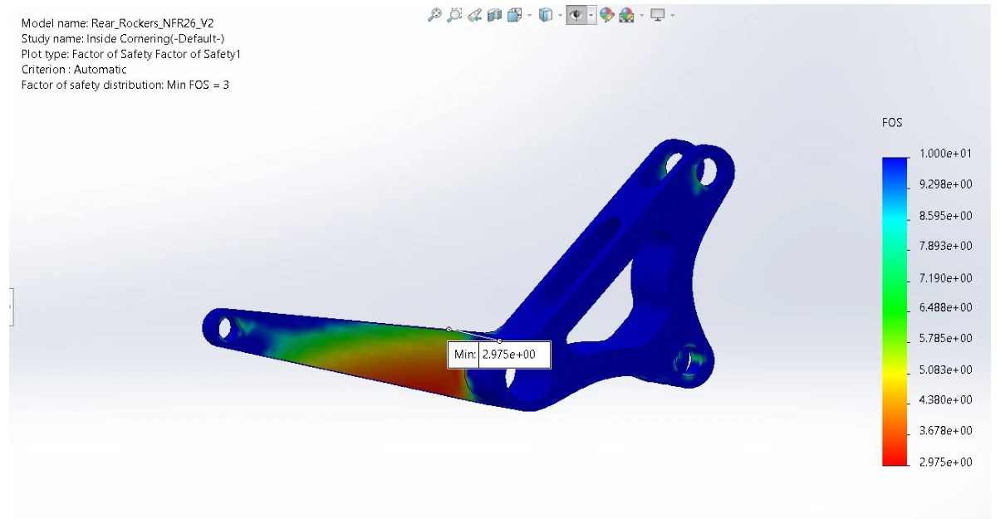
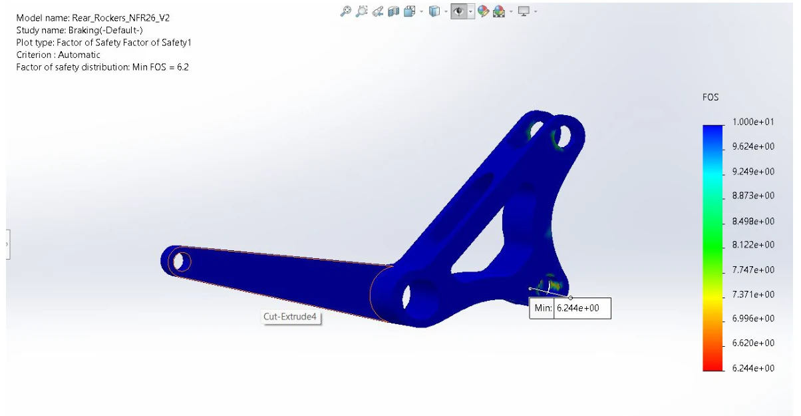
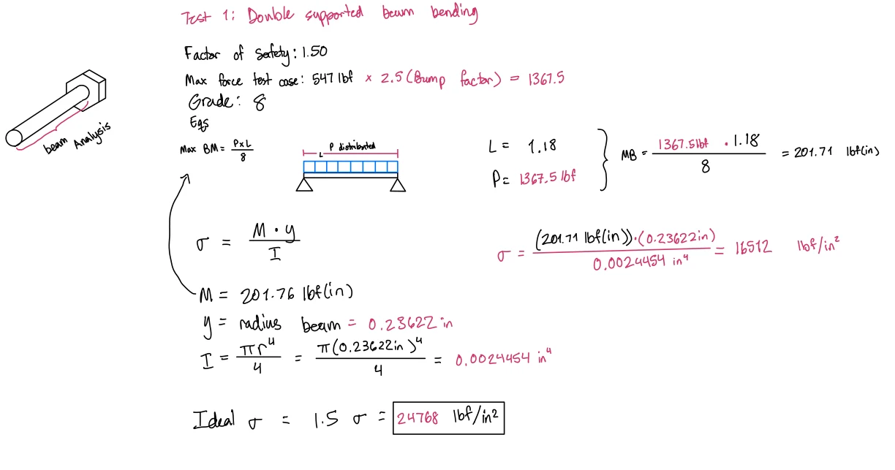

01The design
The rear rocker forces were similar to the previous year's car, so we kept the same bushing and 12 mm shoulder bolt at the pivot. The new requirement was an anti-roll bar, which adds load cases for body roll that the previous design didn't have to handle.

02FEA
We ran four static studies in SolidWorks, one for each major driving case, and checked the minimum factor of safety in each.




03Pivot bolt check
I also checked the 12 mm shoulder bolt by hand, treating it as a beam supported at both ends with the load spread along its length.
- Worst-case force of 547 lbf, multiplied by a 2.5 bump factor: 1,367.5 lbf
- Maximum bending moment, M = PL/8 over a 1.18 in span: 201.7 lbf·in
- Bending stress, σ = My/I for a 0.236 in radius: 16,512 psi
- Required strength with a 1.5 safety factor: 24,768 psi
A grade 8 bolt is rated far above that, at about 130,000 psi yield, which is why the bolt came up as overspecified in the design review.

04Design review
We presented the design at the preliminary design review in October 2025. The feedback set the next steps:
- Use flanged bearings at the pivot.
- Don't mix metric and imperial hardware on the same part. The rocker needs to be fully imperial.
- Downsize the pivot. The shoulder bolt is overspecified, and a hollow rod could replace it.